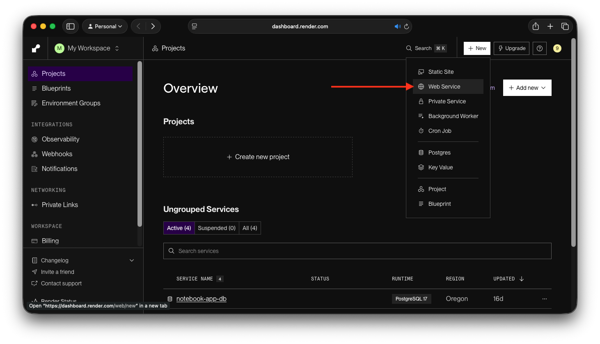
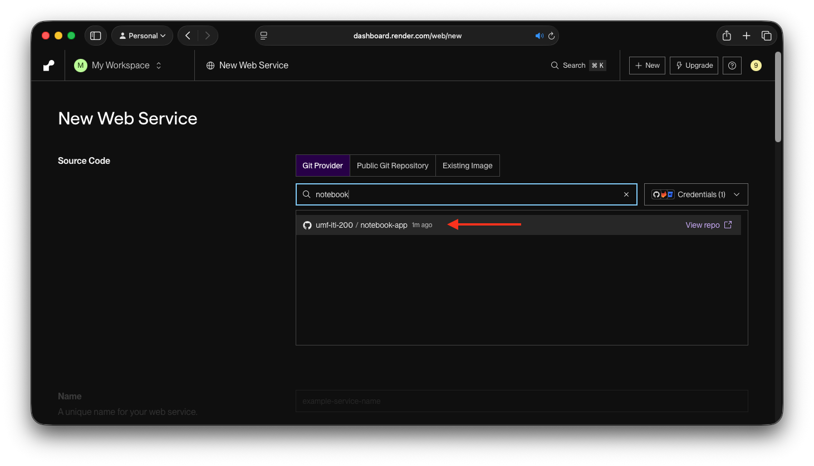
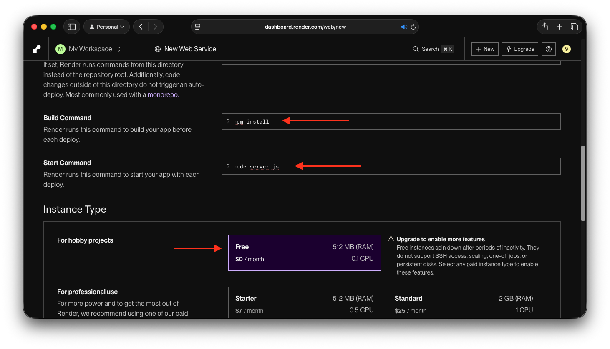
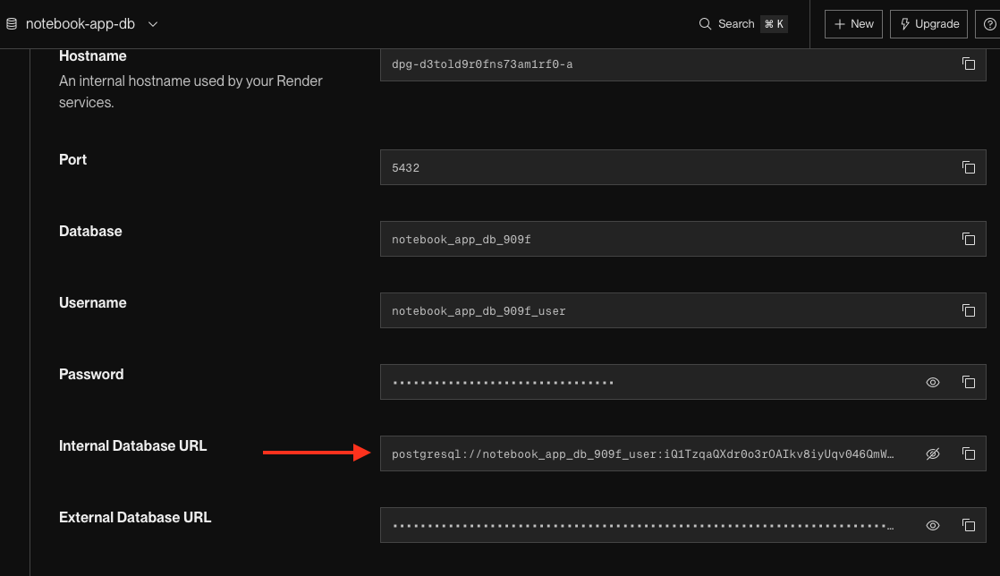
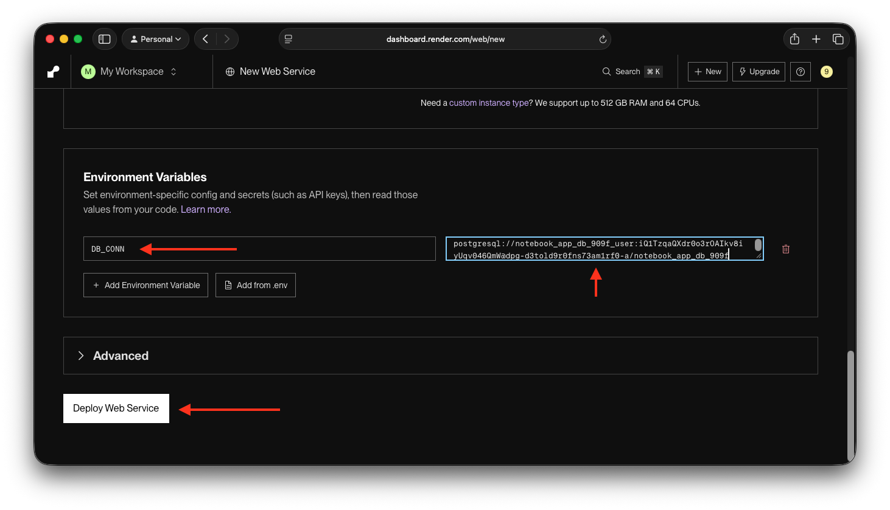
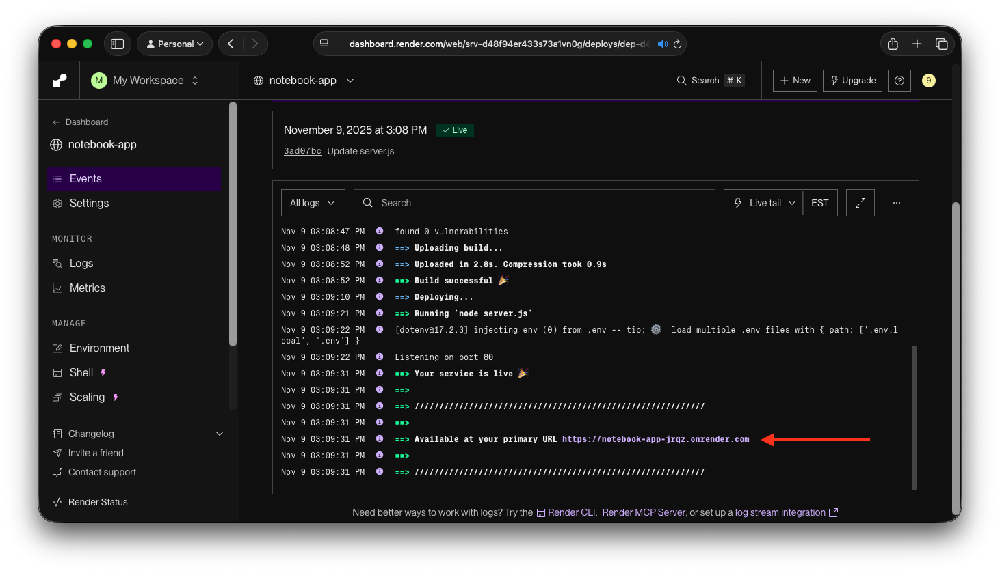
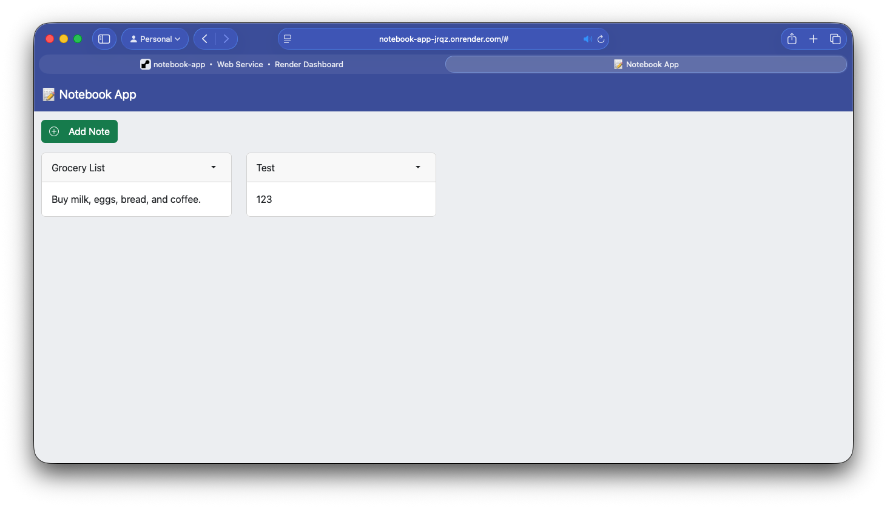

Step 1: Click on "New" button at the navbar and than "Web Service"

Step 2: Search for the project you would like to deply

Step 3: Add "npm install" and "node server". Don't forget to select the "Free" tier

Step 4: Open the database you have created here and search for "Internal Database URL" and copy its content. Since both the app and the database are running in the "same" cloud, then it is a better practice to use the internal address, not the external one.

Step 5: Create a new environmental variable called "DB_CONN" and paste the URL there. Click on "Deploy Web Service"

Step 6: Just wait the platform build your application. If everything went well then you should be able to click on the link provided to visualize your app running.

Step 7: Congratulations! You have just deployed your first web service!
